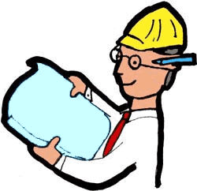
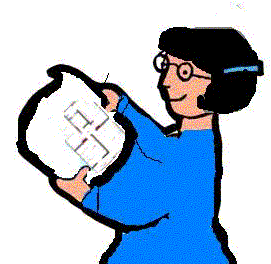

Todos vocês estão envolvidos
no caso do dos cortiços de São Paulo. Embora cada um assuma um personagem
diferente, há algumas tarefas que serão comuns a todos:
1- Escolher o personagem e cumprir a tarefa específica;
 |  |  |
|  |
2- Construir um
texto informativo(com auxílio do grupo), sob o ponto de vista do personagem
estudado, inserindo e explicando as informações e a partir disso, construir
os argumentos necessários para justificar a proposta que defende com relação
ao problema dos cortiços; (gráficos, tabelas, dados importantes, plantas da
casa, etc)
3- Desenhar o seu personagem, objetos e os cenários em que ele poderia aparecer (é interessante dividir esta tarefa com os outros colegas) para a confecção da história em quadrinhos no Hagaquê, em que você deverá narrar uma situação parecida com a que você pesquisou;
4- Escolher uma opção de planta ideal (entre aquelas sugeridas pelos arquitetos) para que uma determinada família habite, de acordo com as condições econômicas;
5- Construir uma maquete respeitando a escala determinada pelo grupo (é interessante que cada um contribua construindo um móvel diferente, de acordo com o tamanho estabelecido, e depois vocês organizem todo o material na maquete).
6- Apresentar o trabalho para a sua comunidade.
3- Desenhar o seu personagem, objetos e os cenários em que ele poderia aparecer (é interessante dividir esta tarefa com os outros colegas) para a confecção da história em quadrinhos no Hagaquê, em que você deverá narrar uma situação parecida com a que você pesquisou;
4- Escolher uma opção de planta ideal (entre aquelas sugeridas pelos arquitetos) para que uma determinada família habite, de acordo com as condições econômicas;
5- Construir uma maquete respeitando a escala determinada pelo grupo (é interessante que cada um contribua construindo um móvel diferente, de acordo com o tamanho estabelecido, e depois vocês organizem todo o material na maquete).
6- Apresentar o trabalho para a sua comunidade.